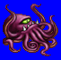
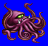
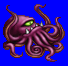
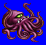

Weight: 20 cm. Weight: 1 lb.
Habitat: Sea Origin: ???
Meaning: English "octopus"
The octopus serves as the natural shape for the famous kraken. There are approximately 200 types of octopus in the world, many of which serve as part of the diet of the local populace. There are unverified reports of octopi whose body size reaches 30 meters when its legs are fully expanded. It eats using the suction cups attached to each leg. It is estimated that octopi can absorb up to twenty times its own body weight.
See also: Kraken